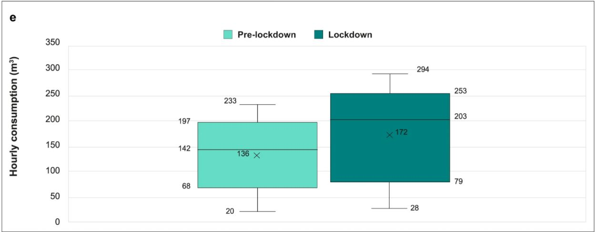

Пандемията не засегна само живота на хората, но и този на флората и фауната. Докато хората стоят затворени в домовете си, природата се прочиства - водите стават по-чисти, въздухът става по-чист (спад на вредните емисии), а животните са необезпокоявани.
*В категориите на менюто ще намерите по-подробна информация за различните промени*
Но за съжаление има и лоша страна, покрай пандемията нарастват пластмасовите отпадъци - изхвърлят се все повече опаковки на продукти за еднократна употреба - като медицински ръкавици, маски, както и най-различни други найлонови и пластмасови опаковки.
В това видео обаче можем да проследим и положителните промени в природата от Ковид-19.
По време на пандемията, заради предприетите строги мерки, множество фабрики затвориха врати или преустановиха работата си, което води до по-малко вредни емисии от индустриалните производства, което значи по-малко замърсяване на въздуха. Други важни фактори за по-чистия въздух са по-малко изпозването на автомобили, обществен транспорт и самолети. Всичко това рязко подобри качеството на въздуха и то по цял свят - множество страни отчитат по-ниски емисии, като азотен диоксид, на парникови газове и по-слабо шумово замърсяване.
Показани са статистики за Великобритания
В Китай заради наложената карантина вредните емисии са спаднали с 25% - по данни на уебсайта Carbon Brief.
Снимките показват разликата в чистотата на въздуха от различни краища на света - Венеция, Италия и Лос Анджелис, САЩ.
Също както качеството на въздуха, така и това на водата се подобрява. След като Италия налага строга карантина, водата във Венеция става изключително чиста. А липсата на големите круизни кораби се отразява изключително благоприятно на морските обитатели - например рибите, които могат да бъдат забелязани в каналите.
По време на пандемията водата започва да се използва повече за битови услуги, отколкото за промишлени услуги. Макар и да е от съществено значение за консумация, хигиенизиране и производство на храна, за милиарди хора обаче достъпът и качеството на водата са ограничени. "Миенето на ръце по-често" беше проста ежедневна рутина за много, а за други привилегия. Много хора биват лишени от най-основната им защита от Covid-19. В много държави хората чакат на опашки, за да си набавят вода и това още повече увеличава нивата на възможност от разболяване.
Двете графики показват количеството използвана вода през 2019г. сравнено с 2020г. във Великобритания.
Оттеглянето на хората действа благоприятно на някои животински видове. Домашните любимци се радват, че стопаните им са у дома с тях. Намалелият пътен трафик пък означава по-малко прегазени диви животни. Има и случаи на диви животни, излезли по улиците на градове:
Попринцип в горите и планините постоянно има активност - планинари, колоездачи, камиони за дърва, като това плаши дивите животни. За това и затварянето ни по домовете оказва положително влияние на тях.
По време на първата карантина на някои учени им бива позволено да излязат навън и да продължат проучванията, като например италиянският еколог Франческа Канячи, на която е позволено да посещава горите около Трентино. Чрез инсталирани камери, тя открива нещо необичайно - елени и всякакви други животни започват да се показват по време на деня.
Друго проучване, този път във Флорида, установява значителна полза за главоглавите костенурки от затварянето на плажовете - женските обикновено снасят яйца около 50% от времето, когато пълзят на брега, когато не са обезпокоени от хора, кучета, ярки светлини или други опасности. Но когато плажовете бяха затворени процентът се е увеличил до 61%.
В Чили се наблюдават рядко срещани видове - дива котка гюина (güiña - Leopardus guigna) и застрашени южни видри.